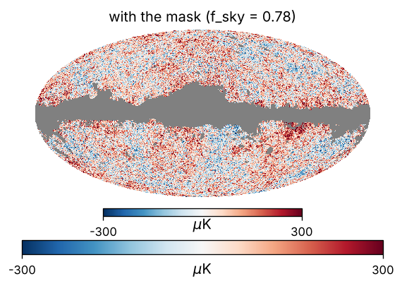
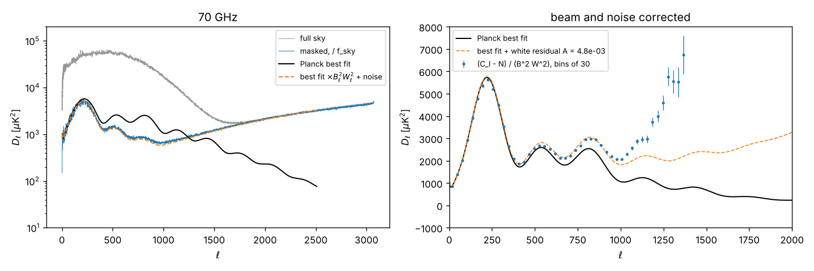
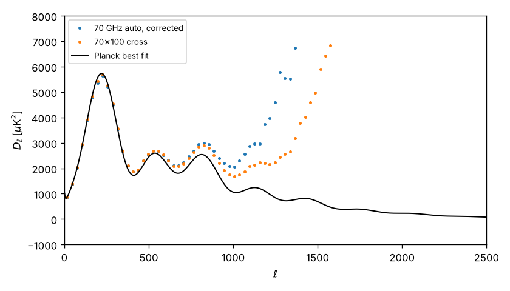
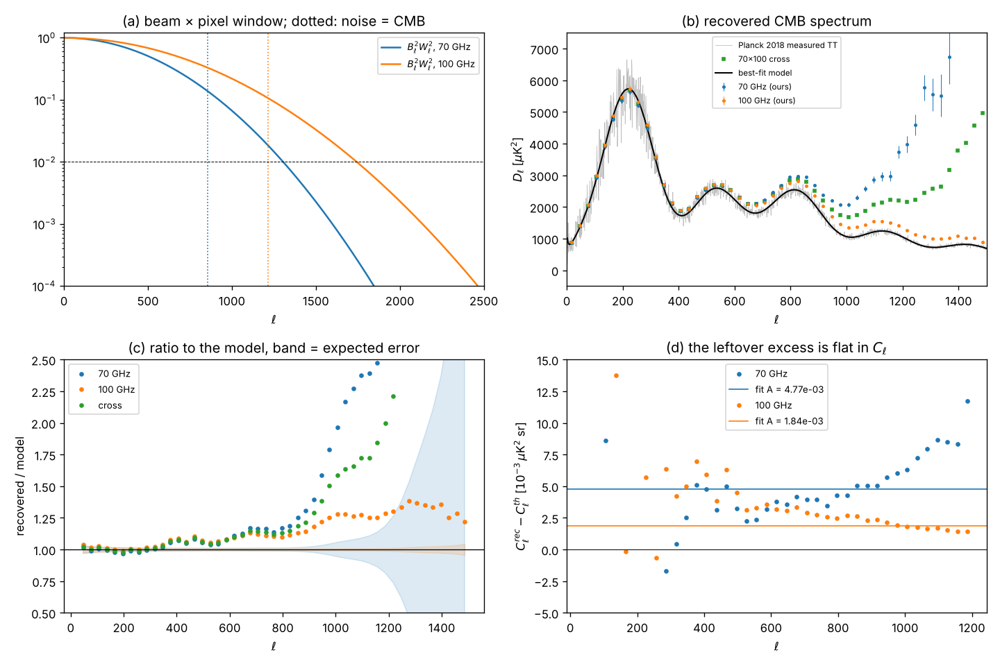

OBJECTIVEWhat we want to find out
Start from a raw sky dominated by the Galaxy and end with a measured CMB spectrum that matches the Planck model to 1–15% up to ℓ ≈ 800 (70 GHz) and ≈ 1000 (100 GHz), recovering the first three acoustic peaks — and explain why it fails beyond that.
DATAThe files (folder data/, 113 MB)
| file | content |
|---|---|
planck_T070_n1024_uK.fits | temperature at 70 GHz (Planck LFI), Nside = 1024, RING, µKCMB |
planck_T100_n1024_uK.fits | the same at 100 GHz (Planck HFI), for the extensions |
mask_UT78_n1024.fits | Planck common temperature mask: 1 = keep, 0 = cut |
COM_PowerSpect_CMB-base-plikHM-…-theory_R3.01.txt | best-fit Planck model Dℓ, ℓ = 2–2508, µK² |
pixel_window_n1024.fits | pixel window Wℓ for Nside = 1024 |
COM_PowerSpect_CMB-TT-full_R3.01.txt | Planck's own measured TT spectrum (used in the last block for comparison) |
The maps come from the Planck 2018 release (PR3), reduced for the lab: temperature only, 100 GHz map and mask degraded from 2048 to 1024, K → µK, NESTED → RING. The degrading adds small systematics (some aliasing above ℓ ≈ 2048 at 100 GHz; mask edges move by a pixel) that the lab does not treat.
ASTROWhat you need to know
| concept | in one line |
|---|---|
| CMB | Light released 380 000 years after the Big Bang; today a 2.725 K glow with differences of ~100 µK (1 part in 30 000) — the seeds of galaxies. |
| Planck | ESA satellite (2009–2013), 9 bands from 30 to 857 GHz. LFI: 30, 44, 70 GHz; HFI: 100–857 GHz. Final release 2018 (PR3). |
| Two frequencies | In µKCMB the CMB is the same at every frequency; the Galaxy is not (synchrotron, free-free at low ν, dust at high ν). Around 70–100 GHz the Galaxy is faintest. |
| Galactic coordinates | The map's equator is the Milky Way plane, the centre points to the Galactic centre; Mollweide is an equal-area view of the whole sphere. |
| Monopole, dipole | ℓ = 0 (2.725 K) and the ~3 mK dipole from our 370 km/s motion were removed by Planck; what is left at ℓ = 0, 1 is Galaxy and offsets. |
| Acoustic peaks | Sound waves in the early plasma: peaks in Dℓ at ℓ ≈ 220 (~1°), 540, 810. They measure geometry, matter and dark matter. |
| Beam, FWHM | 70 GHz: 13.08′; 100 GHz: 9.66′. The beam removes power at high ℓ by Bℓ². |
| Noise, foregrounds | Detector noise is white (flat Nℓ) and not blurred by the beam; foregrounds are real non-CMB sky (Galaxy, faint radio galaxies). |
| Units µK² sr | Cℓ is temperature² × solid angle; D220 ≈ 5730 µK² ↔ C220 = 0.74 µK² sr. |
METHODThe workflow and the notebook
| notebook block | step | method | theory |
|---|---|---|---|
| 0–1 | setup, settings | Colab or local; FREQ, CROSS, FWHM | — |
| 2 | Step 0 · read and look | read_map, UNSEEN test, fsky, mollview | L11 HEALPix |
| 3 | Step 1 · full-sky spectrum | anafast, Dℓ, model | L11 Cℓ |
| 4 | Step 2 · cut the Galaxy | fit/remove monopole + dipole, mask, ÷ fsky | L11 cut sky |
| 5 | Step 3 · noise bias | mean Cℓ at ℓ = 2000–2500, whiteness test | L10 noise |
| 6, 8 | Step 4 · beam and pixels | (C − N)/B²W², bins of 30, Knox errors | L11 beams |
| 7, 9, 10 | Extensions B, C, A | weighted fit of A, cross-spectrum, 100 GHz | L12 least squares |
| 11 | new: both channels | summary plots and results table | — |
RUNHow to run the notebook
- Google Colab (easiest, any OS): upload Lab2_Planck_power_spectrum.ipynb (File → Upload notebook), put the
data/folder in your Google Drive and setDATAin block 0 to its path. Block 0 installs healpy and mounts Drive by itself. - Locally (Linux, macOS or WSL — healpy does not install on native Windows):
pip install healpy numpy matplotlib pandas, keepdata/next to the notebook, run the blocks in order. - Each
anafastat ℓmax = 3071 takes 10–20 s. Run each block once and keep the variables in memory. The whole notebook runs in about 2 minutes.
Block 2 — Step 0: read the map and the mask, and look at them
What it does. Reads map and mask as float64, finds Nside from the number of pixels, flags unobserved pixels, prints mean, rms and maximum of the observed pixels and the sky fraction, and draws the map with and without the mask.
m = hp.read_map(path(f"planck_T{FREQ:03d}_n1024_uK.fits")).astype(np.float64)
mask = hp.read_map(path("mask_UT78_n1024.fits")).astype(np.float64)
nside = hp.npix2nside(m.size) # Npix = 12 Nside^2 -> Nside
bad = m < -1e30 # UNSEEN pixels (test with < -1e30, not ==)
if bad.any():
mask[bad] = 0.0; m[bad] = 0.0
fsky = mask.mean()
hp.mollview(m, min=-300, max=300, unit=r"$\mu$K", cmap="RdBu_r")| printed | 70 GHz | meaning |
|---|---|---|
| Nside, Npix, pixel side | 1024, 12 582 912, 3.44′ | √(4π/Npix) rad: 3.8 pixels per beam FWHM |
| unobserved pixels | 0 (100 GHz: 1) | stored as hp.UNSEEN = −1.6375×10³⁰; in single precision it is not exactly UNSEEN, so test < −1e30 |
| mean, rms | 86.5 µK, 435.7 µK | the rms is dominated by the Galaxy, not the CMB |
| max | 1.5×10⁵ µK | at (l, b) = (15.1°, −0.7°): M17, the Omega Nebula |
| fsky | 0.7780 | 22% of the sky is cut |

Significance. The Galaxy is hundreds of times brighter than the CMB and occupies the equatorial band. Any spectrum of the full sky will be its spectrum. The mask is the first and most important cleaning step.
Hint
fsky = mask.mean().Full solution
0.778.Hint
√(4π/(12·1024²)) rad × (180/π) × 60.Full solution
0.000999 rad = 3.44′.Block 3 — Step 1: the power spectrum of the whole sky
lmax = 3 * nside - 1
ell = np.arange(lmax + 1)
def Dl(cl):
return ell * (ell + 1) * cl / (2 * np.pi)
cl_full = hp.anafast(m, lmax=lmax)
th = np.loadtxt(path("COM_PowerSpect_CMB-base-plikHM-TTTEEE-lowl-lowE-lensing-minimum-theory_R3.01.txt"))
Dth = np.zeros(lmax + 1)
Dth[2:2 + len(th)] = th[:, 1] # the file starts at l = 2 and stops at 2508Line by line. ell = 0, 1, …, 3071 so that index = ℓ in every spectrum array. Dl uses the global ell: it works only on arrays of length ℓmax + 1. The model's row 0 is ℓ = 2, so it goes to index 2; Dth is zero beyond 2508.
| ℓ | Dℓ full sky [µK²] | model [µK²] | ratio | what dominates |
|---|---|---|---|---|
| 10 | 22 520 | 817 | 28 | Galaxy |
| 220 | 51 600 | 5 730 | 9.0 | Galaxy (no peak visible) |
| 800 | 32 620 | 2 526 | 12.9 | Galaxy + noise |
| 2000 | 2 064 | 231 | 8.9 | white noise, D ∝ ℓ² |
Significance. A spectrum is only as clean as the sky it is computed on. Both ends are contaminated, by two different things: the Galaxy at low and intermediate ℓ, the instrument at high ℓ. Steps 2 and 3 remove them one at a time.
Hint
3Nside − 1.Full solution
3071.Hint
2508 − 2 + 1.Full solution
2507: they fill indices 2 … 2508 ofDth.Block 4 — Step 2: cut the Galaxy with the mask
mm = m.copy()
mm[mask == 0] = hp.UNSEEN # fit only on the kept sky
mono, dip = hp.fit_dipole(mm)
mm = hp.remove_dipole(mm) # removes monopole and dipole
mm[mask == 0] = 0.0 # anafast must see numbers, not UNSEEN
cl_mask = hp.anafast(mm, lmax=lmax)
cl_mask /= fsky # pseudo-C_l, corrected on averageLine by line. m.copy() is a real copy (mm = m would be two names for one array). healpy functions skip UNSEEN pixels, so the fit T(n̂) ≈ M + D·n̂ uses only the kept 78%. np.linalg.norm(dip) is |D|. After the removal the cut pixels become 0 ("no signal").
| quantity | value | meaning |
|---|---|---|
| monopole, |dipole| on the kept sky | 35.9 µK, 4.7 µK | full sky they would be 86.5 and 54.3 µK: mostly Galaxy |
| D220 masked / model | 5166 / 5730 | the peak appears (10× drop); still low: the beam (Step 4) |
| D800 masked / model | 853 / 2526 | only 34%: B800² = 0.19 |
| D2000 masked / model | 2065 / 231 | noise, unchanged by the mask |
| raw (no dipole removal) / clean, ℓ = 2, 10, 100 | 1.13, 1.42, 1.02 | leakage of the monopole and dipole through the mask |
| D2 masked / model | 150 / 1017 | the low quadrupole of our sky; cosmic variance ≥ 63% |
Significance. One line of masking changes the spectrum by a factor 10 at the first peak and reveals the acoustic structure. But the details matter: skipping the dipole removal biases ℓ = 10 by 42%, and forgetting 1/fsky lowers everything by 22%.
Hint
1/fsky.Full solution
1/0.778 = 1.285 (22% low).Block 5 — Step 3: the noise bias
hi = (ell >= 2000) & (ell <= 2500) if FREQ == 70 else (ell >= 2600) & (ell <= 3000)
N = cl_mask[hi].mean() # muK^2 sr
for a, b in [(1200, 1500), (1500, 2000), (2000, 2500), (2500, 3000)]:
print(a, b, cl_mask[a:b].mean() / N)Line by line. (ell >= 2000) & (ell <= 2500) combines two boolean arrays element by element; the parentheses are needed because & binds tighter than >=. cl_mask[a:b] is ℓ = a … b − 1 because index = ℓ.
| band ℓ | mean Ĉℓ/N (70 GHz) | reading |
|---|---|---|
| 1200–1500 | 1.059 | 6% of sky still left (B² ≈ 0.01–0.002) |
| 1500–2000 | 1.027 | almost pure noise |
| 2000–2500 | 1.000 | the band used to define N |
| 2500–3000 | 0.946 | 5% below: the noise is not perfectly white (and the pixel window starts to act) |
Result. N = 3.27×10⁻³ µK² sr at 70 GHz; 5.14×10⁻⁴ at 100 GHz (band 2600–3000), six times lower.
Significance. The noise level sets the ℓ where the measurement ends: once N/Bℓ² exceeds the CMB Cℓ, subtracting a slightly wrong N leaves an error larger than the signal. The 5% departure from white in the last band is a warning: a single constant N is a model, not a fact.
Hint
ℓ(ℓ+1)N/2π.Full solution
1000·1001·0.0033/6.283 ≈ 526 µK².Block 6 — Step 4: the beam and the pixels
B = hp.gauss_beam(np.radians(FWHM_ARCMIN[FREQ] / 60.0), lmax=lmax)
W = np.atleast_2d(hp.read_cl(path("pixel_window_n1024.fits")))[0][:lmax + 1]
BW2 = (B * W) ** 2
model_seen = Dth * BW2 + Dl(np.full(lmax + 1, N)) # forward model
cl_cmb = (cl_mask - N) / BW2 # deconvolution
D_cmb = Dl(cl_cmb)
dl = 30
edges = np.arange(2, lmax + 1, dl)
lc = 0.5 * (edges[:-1] + edges[1:] - 1)
Db = np.array([D_cmb[a:b].mean() for a, b in zip(edges[:-1], edges[1:])])
err = np.sqrt(2.0 / ((2 * lc + 1) * fsky * dl)) * (Dthb + DNb)| quantity | 70 GHz | 100 GHz |
|---|---|---|
| ℓ where Bℓ² = 0.5 / 0.1 / 0.01 | 515 / 939 / 1328 | 698 / — / 1798 |
| recovered / model, ℓ = 30–300 | 0.99 | 1.01 |
| ℓ = 300–600 | 1.05 | 1.07 |
| ℓ = 600–800 | 1.15 | 1.11 |
| ℓ = 800–1000 | 1.42 | 1.17 |
| ℓ = 1000–1200 | 2.43 | — |

Reading the plot. Up to ℓ ≈ 600 the recovered points sit on the model, three peaks included. Beyond, they climb above it more and more: B² is small there and the correction amplifies whatever is left (other sky components, the beam shape, the noise colour).
Significance. This is the central lesson of the laboratory: the beam, not the data, decides how far in ℓ you can go. Before dividing by Bℓ² look at how small it is.
Block 8 — Figures of steps 1–4
The professor's two-panel figure: left, the raw spectra on a log scale against model and forward model; right, the corrected binned spectrum against the model, with the extension-B curve. It is the figure above.
Hint
σ = FWHM/2.355 in rad, B² = exp(−ℓ(ℓ+1)σ²).Full solution
exp(−0.694) = 0.50.Block 10 — Extension A: the same analysis at 100 GHz
Set FREQ = 100 in block 1 and rerun blocks 2–8 (block 11 does both channels automatically). The noise band moves to ℓ = 2600–3000 because the sky survives to higher ℓ. One pixel is unobserved inside the kept sky: Step 0 removes it from the mask. N = 5.14×10⁻⁴ µK² sr, B² = 0.5 at ℓ = 698: the spectrum is good to ~17% up to ℓ = 1000.
Block 7 — Extension B: what is left after the correction?
Cth[2:] = 2 * np.pi * Dth[2:] / (ell[2:] * (ell[2:] + 1))
s = slice(30, 1200)
y = cl_mask[s] - N - Cth[s] * BW2[s] # excess, as the instrument sees it
x = BW2[s] # shape of a white sky after the beam
var = 2 * (Cth[s] * BW2[s] + N) ** 2 / ((2 * ell[s] + 1) * fsky)
A = (x * y / var).sum() / (x * x / var).sum()| channel | A [µK² sr] | χ² without → with A (1170 ℓ) | best χ² with free FWHM, no A |
|---|---|---|---|
| 70 GHz | 4.77×10⁻³ | 5722 → 1532 | 2162 at 12.23′ — A wins clearly |
| 100 GHz | 1.84×10⁻³ | 11 558 → 1722 | about as good with a narrower beam |
Block 9 — Extension C: the cross-spectrum 70 × 100
m70, mask_c = masked_map(70, mask0)
m100, mask_c = masked_map(100, mask_c) # common mask: both cuts applied
m70[mask_c == 0] = 0.0
cl_x = hp.anafast(m70, map2=m100, lmax=lmax) / fsky_c
D_x = Dl(cl_x / (B70 * B100 * W ** 2)) # no noise to subtract| ℓ ≈ | 106 | 226 | 526 | 796 | 1006 |
|---|---|---|---|---|---|
| cross / model | 1.02 | 1.00 | 1.04 | 1.13 | 1.59 |

Significance. The cross-spectrum removes the noise bias — no N to estimate, no error from a wrong N — but not the foregrounds: everything on the sky (Galaxy residuals, sources) is in both maps and survives. This is why real analyses (Planck) use cross-spectra between half-missions or detector sets.

Block 11 — New: both channels side by side
| quantity | 70 GHz | 100 GHz |
|---|---|---|
| unobserved pixels | 0 | 1 |
| mean / rms [µK] | 86.5 / 436 | 108.4 / 497 |
| fsky | 0.778 | 0.778 |
| monopole / |dipole| on the kept sky [µK] | 35.9 / 4.7 | 32.9 / 3.7 |
| noise N [µK² sr] | 3.27×10⁻³ | 5.14×10⁻⁴ |
| ℓ where B² = 0.5 / 0.01 | 515 / 1328 | 698 / 1798 |
| ℓ where noise/B²W² > CMB (reach) | ≈ 856 | ≈ 1216 |
| recovered/model, ℓ = 30–300 · 300–600 · 600–800 · 800–1000 | 0.99 · 1.05 · 1.15 · 1.42 | 1.01 · 1.07 · 1.11 · 1.17 |
| white residual A [µK² sr] | 4.77×10⁻³ | 1.84×10⁻³ |
| χ² without → with A | 5722 → 1532 | 11 558 → 1722 |
| cross/model at ℓ ≈ 106, 226, 526, 796, 1006 | 1.02, 1.00, 1.04, 1.13, 1.59 | |
Reading the panels. (a) the 100 GHz transfer function is seven times larger at ℓ = 1300, and its noise is six times lower: its reach is ~1200 instead of ~860. (b) Up to ℓ ≈ 600 our points lie on Planck's own measurement — a home-made analysis of two maps reproduces the published spectrum; beyond, they drift above it, more at 70 GHz. (c) The ratio departs from 1 well before the error band opens: a bias, not noise. (d) That bias is flat in Cℓ, 2–5×10⁻³ µK² sr: the white component of extension B, about 2.6 times larger at 70 GHz than at 100 GHz, as expected for radio sources that are brighter at lower frequency.
LIMITSWhat we neglected, and how it is done for real
| neglected | effect | in a real analysis |
|---|---|---|
| mode coupling of the mask | Ĉℓ mixes neighbouring ℓ; 1/fsky exact only on average | MASTER: invert the coupling matrix (NaMaster) |
| Gaussian beam | Bℓ wrong by per cents where Bℓ² ≪ 1 | measured beam windows (Planck RIMO) |
| white, uniform noise | Nℓ estimated at high ℓ and extrapolated | noise simulations; half-mission cross-spectra |
| foreground residuals | dust, synchrotron, sources inside the mask | masks per frequency, source masks, component separation |
| degrading to Nside 1024 | aliasing above ℓ ≈ 2048, mask edges | native resolution |
| errors from the model | our error bars assume the model is right | simulations of the full pipeline |
SIGNIFICANCEWhat this laboratory teaches
- Every correction is a model. fsky, N, Bℓ, Wℓ each encode an assumption; the residuals of Step 4 and extension B are where those assumptions fail.
- Deconvolution has a horizon. Dividing by B² is safe only where the beam leaves signal; the reach (~860 at 70 GHz, ~1200 at 100 GHz) is set by the instrument, not by the number of pixels.
- Compare with a model at every step. The forward model DthB²W² + DN explains the raw data before any correction: that is how you know the pipeline is right.
- Independent data remove biases. Cross-spectra kill the noise bias, two frequencies separate sky components: the same ideas behind the published Planck spectrum, which our points reproduce up to ℓ ≈ 600.
- The same tools work elsewhere. Masks as windows, noise bias, transfer functions and deconvolution appear in every spectrum of Lessons 07–10: on the sphere they are just written with ℓ instead of f.
Project ideas (search terms): pseudo-Cℓ with NaMaster and an apodised mask · half-mission cross-spectra · a point-source mask and the change of A · component separation with 70 and 100 GHz · a Gibbs sampler for the low-ℓ spectrum (Lesson 14).
THE THEORY · BACK TO THE LESSONLesson 11 · the mind map of the whole processPractice
Every exercise of this unit in one place. Answers are checked to about 1%; fractions like 1/3 are accepted.
Code Lab
Every Python and Fortran snippet of this unit, plus the hyperspectral project tasks. The full files are in the code folder next to this page.
Cheatsheet
All the formulas of this unit. Hover any symbol for its name, meaning and code.